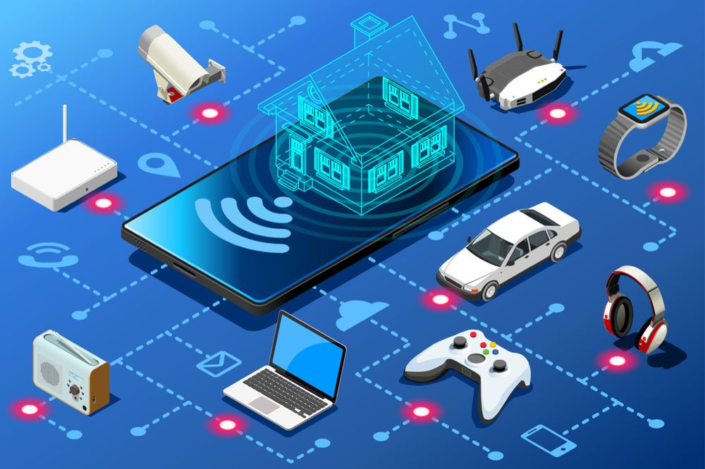
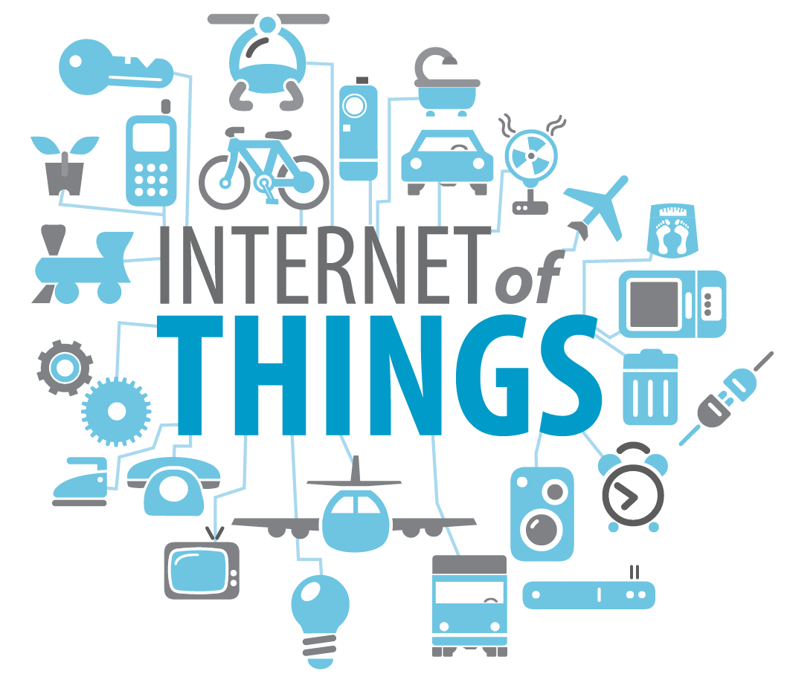

Невелике за китайськими мірками місто Іньчуань називають втіленням Smart City. Столиця провінції Нінся розташована на півночі Китаю. Тут проживає 1,6 млн людей. Це — єдине місто в світі, де взагалі не потрібна готівка. Замість цього працює технологія розпізнавання обличчя. З її допомогою можна оплачувати товари та послуги. В автобусі система сканує обличчя пасажира — і гроші списують з його рахунку автоматично. Те ж саме відбувається по всьому місту у всіх сферах життєдіяльності: розрахунок в магазинах та банках, у громадському транспорті та ресторанах. Людське обличчя — це і є банківська картка.
Технології використовують тут у першу чергу в домівках:
душові кабіни, які заощаджують воду,
енергоефективні освітлювальні прилади,
системи поливу в садах, які вмикаються автоматично лише за необхідності,
«розумні» сміттєві баки, які трамбують сміття, збільшуючи ефективність утилізації вп’ятеро. Коли бак заповнений, в комунальну службу надходить сигнал про те, що сміття можна вивозити,
датчиками світла та руху, що включають освітлення тротуарів тільки тоді, коли по ним проходить людина.
В Іньчуані ніхто не ходить по магазинах. Щоби заповнити вдома холодильник, потрібно вибрати продукти в додатку, зробити замовлення і отримати його на одній з точок видачі. Автоматичне сховище продуктів відсканує QR-код, згенерований в додатку, збере замовлення і видасть людині всі її продукти. Розраховуються за це також обличчям.
Фудзісава, Японія
Це — спеціально збудоване екомістечко у передмісті Токіо. Станом на 2015 рік в місті нараховувалось 423 тис населення. Ідея створення екологічного та ефективного міста надійшла від компанії Panasonic, яка посприяла залученню інвестицій. Місто знаходиться в безпосередній близькості до Тихого океану. Кліматичні умови тут сприятливі для проживання. У місті панує помірна вологість та тепла погода: температура влітку не перевищує +28 градусів, а взимку не опускається нижче +11 градусів.
На території Фудзісави розташовані 600 котеджів. Електрика до них надходить від сонячних батарей. Уся побутова техніка тут енергоощадлива: приміром, пральна машина встановлює витрати порошку та об’єм води в залежності від ступеня забруднення білизни.
На вулицях міста встановлено сенсорні системи, тому освітлення працює тільки, коли вулицями ходять люди. У разі землетрусів місто саме протягом 3 діб може забезпечити жителів гарячою та холодною водою. Всіма об’єктами керують з комплексу Fujisawa SST Square на центральній міській площі.
Сонґдо (Songdo IBD), Південна Корея
Один з найбільших проектів розумних міст. Будівництво міжнародної економічної зони Сонґдо почалося ще 2003 року. Тут мешкають 100 тис людей. Діловий район знаходиться в 15 хвилинах від Міжнародного аеропорту Інчхон — найзавантаженішого в країні, — і входить до переліку так званих «аеротрополісів». Так називають населені пункти, що будуються навколо аеропорту.
Songdo IBD задуманий компанією Gale International як екологічно чисте місто. Це позначилося на плануванні проекту. Смарт-район побудовано таким чином, що всі офісні приміщення, зони відпочинку, медичні установи, школи та заклади роздрібної торгівлі розташовано поблизу житлових будинків. Це зменшує потребу в автомобілях.
Місто побудоване навколо центрального парку. Близько 40% його території знаходиться на зеленому просторі. Це — вдвічі більше, ніж, наприклад, у Нью-Йорку. В будь-яку точку цього міста можна доїхати на велосипеді за 15 хвилин.
Кожен житель Сонґдо має смарт-картку. Вона є особистим ключем до всього в місті: поїздок у метро, оплати паркувального місця, перегляду фільмів, прокату безкоштовного громадського велосипеда тощо. Картка також слугує ключом від квартири. Якщо вона раптом загубиться, код в замку квартири змінюється автоматично.
В кожному районі встановлені ємності для збору дощової води. Нею поливають газони і миють вулиці. Крім цього, у Сонґдо використовують пневматичну систему видалення відходів. У місті немає сміттєвих баків і сміттєвозів, а відходи потрапляють у труби, якими сміття під тиском переміщується до місць утилізації та переробки.
Інтернет речей
Інтернет речей (Іnternet of Things – IoT) перетворює звичні для нас речі у нові пристрої, створюючи як розумні годинники, так і розумні міста. Він під’єднує далекі від Інтернету засоби до мережі та надає їм нові функції. Недарма чекаємо понад 50 мільярдів таких пристроїв уже за кілька років!
Термін “Інтернет речей” (або англійською “Internet of Things”, скорочено – ІоТ) вперше було сформульовано в кінці ХХ-го століття, у 1999 році. Це концепція комунікації об’єктів (“речей”), які використовують технології для взаємодії між собою та з навколишнім середовищем. Також ця концепція передбачає виконання пристроями певних дій без втручання людини. Таким чином, всі пристрої в будинках, в автомобілях, на користувачеві виконують обробку інформації, її аналіз та обмін між собою та, залежно від результатів, приймають рішення і виконують певні дії.
Різновиди IoT-систем
Загалом, усі екосистеми бувають двох типів: масові та критичні.
Масові — це такі, де один сервер приймає багато запитів від великої кількості пристроїв, обробляє їх та аналізує. Масовий IoT вже навколо нас — система Eway відстежує рух громадського транспорту в містах України, Нова пошта моніторить посилки і дає вам інформацію про доставку, а MiBand аналізує ваш сон і порівнює його з результатами інших користувачів. Масові системи зазвичай дешеві та не споживають багато електроенергії.
Не менш важливу роль у нашому житті відіграють критичні екосистеми IoT. Їхнє завдання — оперативно передавати інформацію через надійну стійку мережу, бо від цього часто залежить людське життя. Наприклад — автопілот Tesla.


Штучний інтелект
Штучний інтелект(ШІ) - властивість інтелектуальних систем виконувати творчі функції, які традиційно вважаються прерогативою людини; наука і технологія створення інтелектуальних машин, особливо інтелектуальних комп'ютерних програм. ШІ пов'язаний з подібною задачею використання комп'ютерів для розуміння людського інтелекту, але не обов'язково обмежується біологічно правдоподібними методами.
Зараз штучний інтелект застосовують практично в кожній сфері діяльності, зокрема: у військовій справі, медицині, економіці, промисловості, транспорті, культурі.
На сьогодні лідером в області штучного інтелекту є США. Щороку в країні захищається близько 3000 докторських дисертацій і відкривається близько 1400 стартапів у галузі ШІ. Наразі США виділяють на розробку штучного інтелекту близько мільярда доларів на рік, але наголошується, що для підтримки конкурентної переваги в галузі ШІ бізнесу потрібно набагато
більш суттєва підтримка.
Ось деякі з найбільш відомих ШІ-систем:
Deep Blue - переміг чемпіона світу з шахів Гаррі Каспарова.
Watson - розробка IBM, здатна сприймати людську мову і виробляти імовірний пошук, із застосуванням великої кількості алгоритмів.
MYCIN - одна з ранніх експертних систем, яка могла діагностувати невеликий набір захворювань, причому часто так само точно, як і лікарі.
Роботи майбутнього
Все більше людських професій перебирають на себе роботи чи штучний інтелект. Безпілотні таксі вже на повну тестуються на полігонах IT-гігантів. Однак глобальна роботизація може торкнутися і більш простіших професій. Приміром – барменів чи кельнерів. У столиці Чехії Празі, приміром, відкрився унікальний заклад, де замість живого бармена напої приносить роботизована рука.
«Cyberdog» («Кібернетичний пес», укр., – ред.) – так називається унікальне празьке кафе і вже з першого погляду неабияк виділяється з-поміж навколишньої архітектури. Схожий він, і дійсно, на футуристичного пса з фільмів про майбутнє. Кафе стало справжньою архітектурною пам’яткою у списку обов’язкових для відвідування місць міста.
Компанія Boston Dynamics опублікувала відео, на якому можна добре роздивитись вражаючі можливості останнього покоління роботів Atlas.
Ці роботи здатні працювати на відкритому повітрі та усередині будівель, тобто теоретично можуть замінити простих помічників на будівництві.
На тілі та ногах роботи мають спеціальні датчики, які допомагають їм тримати рівновагу та відчувати баланс, а на голові – стерео сенсори, через які вони оцінюють місцевість, маніпулюють та уникають перешкод.